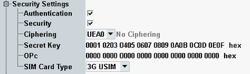

The security settings configure parameters related to the authentication procedure and other security procedures.
This section is not relevant for reduced signaling.

Enables or disables authentication, to be performed during registration. Authentication requires a test SIM. An appropriate 3GPP USIM can be obtained from Rohde & Schwarz (R&S CMW-Z04 or R&S CMW-Z06).
Remote command:Enables or disables the security mode during authentication. With enabled security mode, the UE performs an integrity check. This setting is only relevant if authentication is enabled.
Remote command:Specifies ciphering to be applied to radio bearer. The algorithm KASUMI is defined by 3GPP TS 35.202, the algorithm SNOW 3G is defined by ETSI/SAGE specification "3GPP Confidentiality and Integrity Algorithms UEA2 & UIA2".
Option R&S CMW-KS425 and SUW+ (R&S CMW-B300B) is required.
Remote command:The secret key K is used for the authentication procedure (including a possible integrity check). The value is entered as 32-digit hexadecimal number and is relevant for all SIM card types.
The authentication fails unless the secret key set by this parameter is equal to the value stored on the test USIM of the UE under test. The default value is compatible with the test USIM cards R&S CMW-Z04 and R&S CMW-Z06.
Remote command:The key OPc is used for authentication and integrity check procedures with the MILENAGE algorithm set (SIM card type "Milenage"). The value is entered as 32-digit hexadecimal number.
Remote command:Displays the type of the SIM card used for registration.
The full test functionality is available for all types. "Milenage" refers to a USIM with MILENAGE algorithm set.
Remote command: